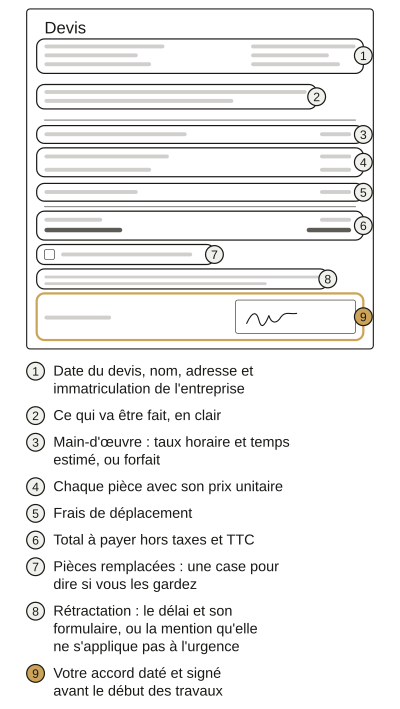

- Accueil
- Guides de serrurerie
- Reconnaître un faux serrurier
Arnaque au serrurier : reconnaître un faux dépanneur
Une arnaque au serrurier se repère souvent avant l’arrivée : numéro pris sur un prospectus aux couleurs de la mairie, entreprise sans nom ou prix refusés.
Devant la porte : pas de devis écrit, perçage annoncé d’emblée ou paiement exigé sans facture. Alors ne signez rien et appelez quelqu’un d’autre.
Au téléphone avant qu’il se déplace
- Un magnet ou un prospectus du hall aux couleurs de la mairie. C’est interdit sans son accord et la DGCCRF déconseille ces numéros.
- Aucun nom d’entreprise. Il doit donner son nom, son adresse et son téléphone avant tout engagement (Code de la consommation, L111-1).
- Prix refusés au téléphone. Il doit les communiquer « préalablement à la conclusion d’un contrat » (arrêté du 24 janvier 2017, article 2).
- Un prix d’appel très bas sans dire pour quoi. Un « à partir de » ne vaut rien si l’on ne sait pas quelle intervention il couvre.
- Une même entreprise qui fait tout à toute heure : serrurerie et plomberie, vitrerie et électricité. La DGCCRF invite à s’en méfier.
Nous décrochons la nuit nous aussi, pour la serrurerie seulement : jugez-nous sur le reste de cette liste.
Une annonce payée en tête des résultats ne prouve rien : la DGCCRF conseille de s’en méfier. Vérifiez son nom et son SIREN comme pour toute entreprise.
Devant la porte avant qu’il commence
- Pas de devis écrit avant de commencer, alors qu’il est dû dès le premier euro. L’amende peut atteindre 3 000 € (15 000 € pour une société).
- Le perçage annoncé d’emblée. Percer le cylindre (la pièce où entre la clé) peut être nécessaire mais pas avant d’avoir regardé la serrure.
- Une serrure neuve ou un blindage vendus en pleine nuit. La DGCCRF le dit : n’acceptez que l’urgence. Le reste se décide de jour avec d’autres devis.
- La pression : « décidez maintenant » ou un prix qui grimpe si vous hésitez. Profiter ainsi d’une urgence peut être un délit : l’abus de faiblesse.

Un déplacement payant n’est pas une arnaque s’il est annoncé
On lit souvent qu’un « diagnostic facturé même si vous refusez » trahit un faux serrurier. C’est vrai à moitié.
La loi permet de faire payer un devis ou un déplacement s’il est annoncé « préalablement à la conclusion d’un contrat » (même arrêté, article 2).
Ce qui doit alerter, c’est une somme découverte devant la porte.
Chez nous, on vous dit avant le départ qui vient et ce que couvre notre « à partir de 75 € TTC » : le déplacement et le diagnostic.
Le devis accepté les comprend. Si vous le refusez, vous les réglez : 75 € TTC le jour ou 95 € TTC de 21 h à 6 h.
Un SMS vous redit ces montants après l’appel.
Comment se passe une intervention chez nousÀ la fin : la facture, les pièces et le paiement
- Pas de facture avant de payer. Elle est due au-delà de 25 € TTC. Elle porte la date et le lieu, chaque prestation et chaque pièce, le total HT et TTC.
- Les pièces remplacées emportées sans vous le demander. Elles sont à vous : gardez-les ou signez une décharge si vous n’en voulez pas.
- Une facture plus lourde que le devis signé ou des travaux ajoutés sans votre accord. Le devis signé engage aussi le professionnel.
- Des espèces exigées ou un passage au distributeur. Payez par carte ou par chèque : vous gardez une trace du paiement.
Si c’est déjà arrivé
- Il est encore là, vous menace ou refuse de partir : appelez le 17.
- Gardez tout : le devis et la facture, les SMS et les photos de la porte, le relevé bancaire et les pièces remplacées.
- Réclamez d’abord par écrit auprès de l’entreprise. Vous pouvez passer par SignalConso, la plateforme de la DGCCRF.
- Sans réponse, demandez l’aide d’un médiateur de la consommation ou d’un conciliateur de justice.
- En dernier recours, le tribunal judiciaire peut par exemple vous faire rembourser si la facture ne correspond pas à ce qui a été fait.
- Il s’est dit envoyé par la mairie ou a profité d’un proche fragile ? Portez plainte, en ligne si vous ignorez qui il est.
- Une question de droit avant d’agir ? Appelez RéponseConso, le service de renseignement de la DGCCRF, au 0809 540 550 (numéro non surtaxé).
Faux serrurier : vos autres questions
Un serrurier peut-il exiger d’être payé tout de suite ?
Oui pour l’urgence demandée et le strict nécessaire. Pour d’autres travaux signés chez vous, rien n’est payé avant sept jours.
Une facture très chère, est-ce illégal ?
Pas en soi : les prix sont libres. Il est interdit de les taire, de dépasser le devis signé ou d’ajouter des travaux sans accord.
Puis-je annuler un devis signé en urgence ?
Pas pour l’urgence, limitée au strict nécessaire. Pour des travaux en plus signés chez vous, vous avez en principe 14 jours.
Comment vérifier qu’une entreprise de serrurerie existe ?
Cherchez son SIREN (neuf chiffres) dans l’Annuaire des entreprises de l’État. S’il n’y est pas, raccrochez ; s’il y est, restez prudent.
Sources
- DGCCRF, « Plomberie, serrurerie, chauffage… choisir le bon professionnel pour un dépannage à domicile », 1er juillet 2025, lu le 26 octobre 2026
- Service-public.gouv.fr, « Dépannage à domicile », vérifié le 25 mars 2025, lu le 26 octobre 2026
- Légifrance, arrêté du 24 janvier 2017 relatif à la publicité des prix des prestations de dépannage, articles 2 et 4, lu le 26 octobre 2026
- Légifrance, Code de la consommation, articles L111-1, R111-1, L121-9, L131-5, L221-10, L221-18 et L221-28, lu le 26 octobre 2026
- Service-public.gouv.fr, « Quels sont les numéros en cas d’urgence (Samu, pompiers...) », vérifié le 25 août 2026, lu le 26 octobre 2026
- SignalConso, la plateforme de signalement de la DGCCRF, consulté le 26 octobre 2026
- Annuaire des Entreprises de l’État, consulté le 26 octobre 2026
- Légifrance, Code de la propriété intellectuelle, articles L731-1 et L731-2, lu le 26 octobre 2026